緒論 實驗室安全與器材9 題
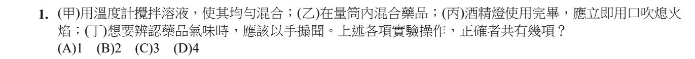
只有丁是對的。
甲：溫度計是量測工具，不是攪拌棒——下端的玻璃球泡很薄，攪一攪就破了。
乙：量筒只負責量體積。它口徑小又高，混合藥品若放熱會噴出來，刻度也會被弄髒。要混合請用燒杯。
丙：酒精燈要用燈罩蓋熄。用口吹會把火焰壓進燈內，引燃燈裡的酒精蒸氣。
丁：手搧聞——讓少量氣體飄過來，而不是把臉湊上去猛吸。
「四項裡只有幾項對」這種題型段考很愛出。它不是在考記憶，是在問：你真的做過這個動作嗎？
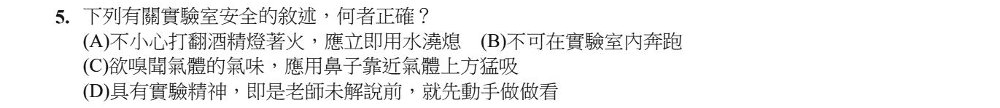
(A) 酒精比水輕，會浮在水面上。澆水只會讓燃燒中的酒精跟著水流開，火勢反而擴大。正確做法是用濕抹布覆蓋——隔絕空氣才是滅火的原理。
(C) 要用手搧聞。未知氣體直接猛吸，是實驗室最危險的動作之一。
(D) 「先動手試試看」在實驗室不叫實驗精神，叫意外。真正的實驗精神是先想清楚會發生什麼，再動手。
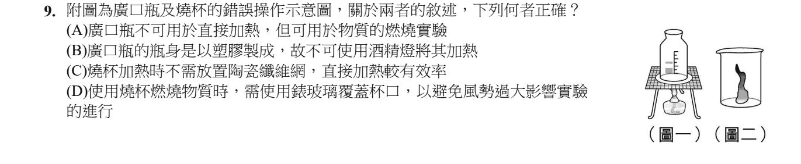
廣口瓶不能加熱，但燃燒實驗正是在廣口瓶裡做的。
圖一錯在把廣口瓶放上陶瓷纖維網加熱——廣口瓶玻璃厚、受熱不均，一燒就裂。它的工作是收集氣體、裝著氣體做燃燒實驗，所以 (A) 正確。
(B) 廣口瓶是玻璃做的，不是塑膠。
(C) 燒杯加熱一定要墊陶瓷纖維網，讓受熱均勻。
(D) 圖二本身就是錯誤操作：燒杯不是拿來燒東西的容器，燃燒實驗要在廣口瓶裡做。
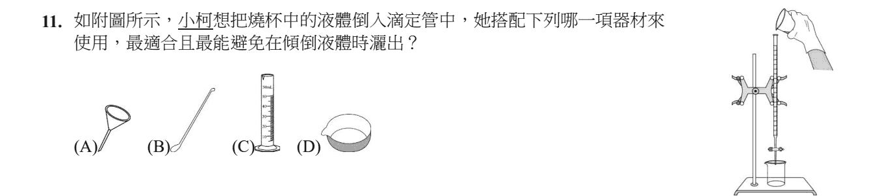
漏斗口大底小，專門把液體「導」進細口的容器，倒的時候不會灑出來。
(B) 藥匙：取用固體藥品。(C) 量筒：量液體體積。(D) 蒸發皿：把溶液蒸乾。
器材題的答法：先想「這個動作卡在哪裡」（口太細），再找專門解決它的器材。
可以直接加熱的只有試管、蒸發皿、坩堝這一類：管壁薄、耐熱，而且沒有刻度。
量筒不行的理由不只是會裂——它是精密量具。玻璃受熱會脹、冷卻後不一定回到原狀，刻度就永久失準了。燒杯雖然常加熱，也必須墊陶瓷纖維網讓受熱均勻。
記一句就夠：身上有刻度的，都不要直接燒。
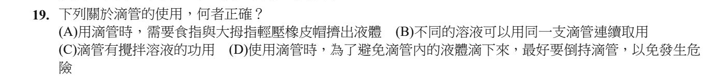
(B) 一支滴管取兩種溶液＝交叉污染，後面測到的東西都不能算數。
(C) 滴管管壁很薄，攪拌會斷在杯子裡。
(D) 倒著拿，液體會流進橡皮帽——橡皮被腐蝕，而且下次吸取時把殘留物帶回溶液。正確做法是維持管口朝下，取好就放開。
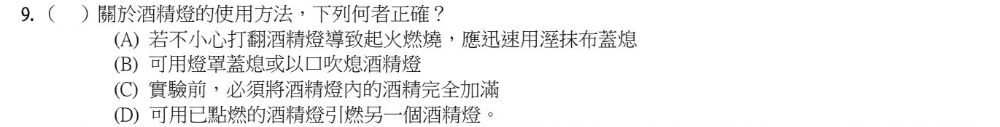
(B) 前半對、後半錯——一個選項裡只要有一句錯，整句就是錯的。這是段考最常見的埋法。
(C) 酒精加到燈容量的 2/3 以下。加滿了，燈一傾斜就溢出來。
(D) 引燃另一個燈時必須傾斜，燈內的酒精會流出來燒到手。要用火柴或打火機。
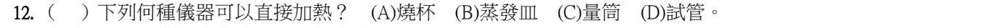
試管可以直接放在火焰上加熱（管口不要對著人）。
(A) 燒杯要墊陶瓷纖維網才能加熱。(C) 量筒是精密量具，不能加熱。
⚠️ 補充：(B) 蒸發皿其實也耐熱、可以直接加熱。本題官方答案是 (D)，可能是依照老師上課的講法；如果考試遇到類似選項，請問老師這一題怎麼算。
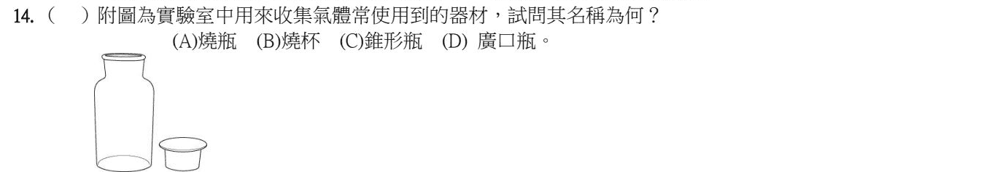
圖中是廣口瓶：瓶身直筒、瓶口很寬，旁邊那個是蓋瓶口用的蓋子／玻璃片。瓶口寬，排水集氣法才方便把導管伸進去收集氣體。
(A) 燒瓶：圓肚子、細長脖子。(B) 燒杯：矮胖、有杯嘴、身上有刻度。(C) 錐形瓶：三角錐形。
第 1 章 ① 測量與誤差（長度的紀錄）13 題
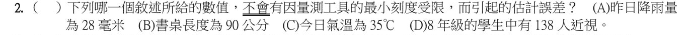
「138 人」是一個一個數出來的，不是用儀器量的——人數沒有「估計值」，不會有 138.4 人。
降雨量（雨量計）、長度（尺）、氣溫（溫度計）都是用工具量的，最後一位是估出來的，所以一定受最小刻度限制。
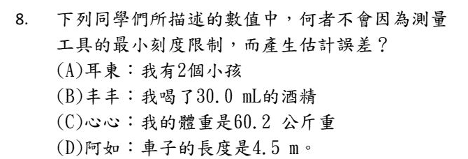
和上一題一模一樣的考法：「2 個小孩」是數出來的，沒有估計位。
30.0 mL（量筒）、60.2 公斤（體重計）、4.5 m（捲尺）都是測量值，最後一位都是估的。
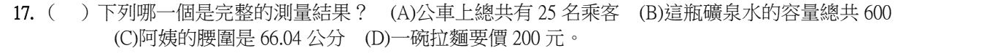
完整的測量結果 ＝ 數值 ＋ 單位。66.04 公分兩樣都有。
(A) 25 名乘客是「數」的，不是測量。(B) 「600」沒有單位——是 600 毫升還是 600 公克？(D) 200 元是價錢，不是用工具量出來的。
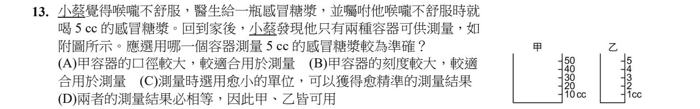
看兩個容器的刻度：甲每一格 10 cc，乙每一格 1 cc。要量 5 cc，甲連一格都不到，只能用猜的；乙可以清楚看到 5 的刻度。
(C) 的「選用愈小的單位」意思就是最小刻度愈小，量得愈準。
(A) 口徑大，同樣 5 cc 液面只升一點點，反而更難讀。(B) 刻度大＝最小刻度大＝比較不準。(D) 工具不同，準確程度就不同，結果不一定相等。
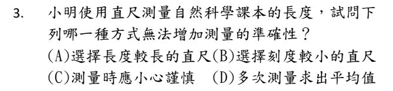
準確度是由最小刻度決定的，不是由尺有多長決定的。
一把 30 公分、最小刻度 1 mm 的尺，和一把 100 公分、最小刻度 1 mm 的尺，能估到的位數完全一樣。尺變長只是讓你不必接著量第二次，跟準不準無關。
這題和變因的邏輯是同一個：要改的是真正會影響結果的那個東西，不是看起來有關係的那個。
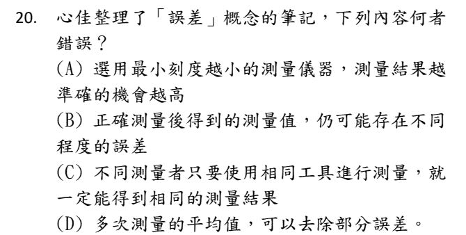
測量值的最後一位是「估」出來的——同一把尺、同一個物體，你估 70.42、我估 70.43，兩個都合法。所以 (C) 的「一定能得到相同結果」不成立。
這正是誤差的本質：它不是誰做錯了，而是測量這件事本身就有極限。多測幾次取平均可以把它縮小，但永遠不會變成零。
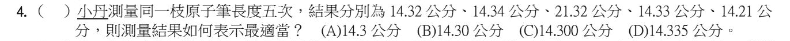
第一步：先剔除明顯量錯的數據。21.32 和其他數字差了 7 公分，一定是看錯了，丟掉。
第二步：剩下 14.32、14.34、14.33、14.21 取平均：
(14.32 ＋ 14.34 ＋ 14.33 ＋ 14.21) ÷ 4 ＝ 57.20 ÷ 4 ＝ 14.30 公分
第三步：平均值的位數要和原本的紀錄一樣，原紀錄都到小數第二位，所以寫 14.30。(A) 14.3 少一位；(C) 14.300、(D) 14.335 多寫了尺量不到的位數。
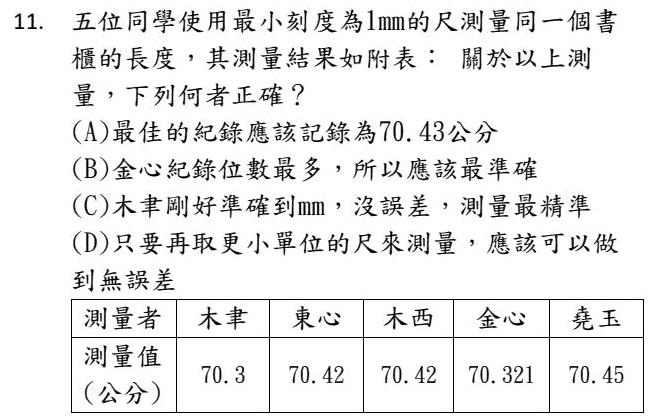
最小刻度 1 mm＝0.1 公分，所以可以讀到 0.1 公分，再往下估一位——合格的紀錄必須寫到小數第二位。
木聿的 70.3 少估一位（不合格）、金心的 70.321 多估了兩位（憑空捏造，不合格）。剩下 70.42、70.42、70.45 取平均＝70.43。
(B) 位數多 ≠ 準確，多出來的位數是尺根本量不到的。(C) 沒有估計位不叫「沒誤差」，叫紀錄不完整。(D) 換更小的尺只是把誤差縮小，永遠到不了零。
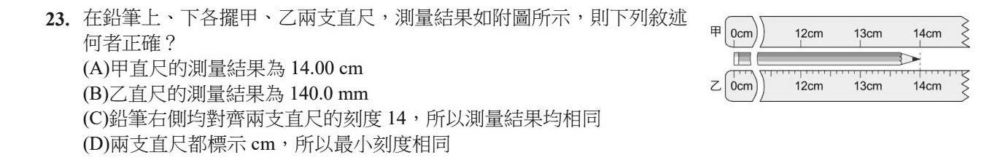
先看兩支尺的差別：甲尺只有公分刻度（最小刻度 1 cm），乙尺有毫米刻度（最小刻度 1 mm）。
甲尺：讀到 14 cm，再估一位 → 14.0 cm。(A) 的 14.00 多估了一位。
乙尺：讀到 14.0 cm，再估一位 → 14.00 cm ＝ 140.0 mm ✓
(C) 雖然都對齊 14，但兩支尺準確度不同，紀錄的位數就不同。(D) 標示的單位都是 cm，不代表最小刻度一樣。
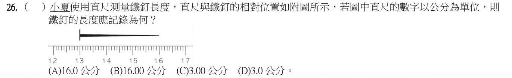
起點不是 0！鐵釘從 13 公分量到 16 公分 → 長度 ＝ 16 − 13 ＝ 3 公分。
尺的最小刻度是 1 mm ＝ 0.1 公分，要再估一位到 0.01 → 記成 3.00 公分。
(A)(B) 把尾端的讀數當成長度了。(D) 3.0 少估一位。
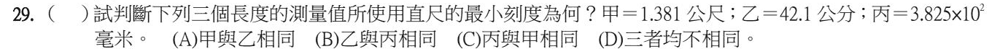
技巧：最後一位是估計值，倒數第二位就是最小刻度。
甲 1.381 公尺：最後一位 0.001 m（1 mm）是估的 → 倒數第二位 0.01 m ＝ 1 公分。
乙 42.1 公分：最後一位 0.1 cm 是估的 → 倒數第二位 ＝ 1 公分。
丙 3.825×10² 毫米 ＝ 382.5 mm：最後一位 0.1 mm 是估的 → 倒數第二位 ＝ 1 毫米。
所以甲和乙相同。
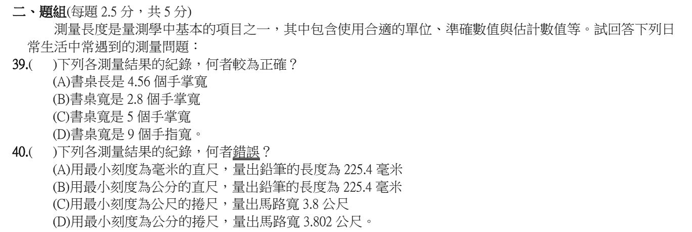
這裡的「單位」是手掌寬。能數到幾個完整手掌是準確值，剩下不滿一個手掌的部分再估一位。
→ 「2.8 個手掌寬」剛好：2 個是量到的，0.8 是估的。
(A) 4.56 估了兩位，多寫了。(C) 5、(D) 9 沒有估計位，紀錄不完整。
規則：讀到最小刻度，再往下估一位。
(A) 最小刻度 1 mm → 估到 0.1 mm → 225.4 mm ✓
(B) 最小刻度 1 cm → 只能估到 1 mm → 應該記 225 mm（22.5 cm）。225.4 mm 多估了一位 ✗
(C) 最小刻度 1 m → 估到 0.1 m → 3.8 m ✓
(D) 最小刻度 1 cm ＝ 0.01 m → 估到 0.001 m → 3.802 m ✓
第 1 章 ② 體積（排水法）3 題
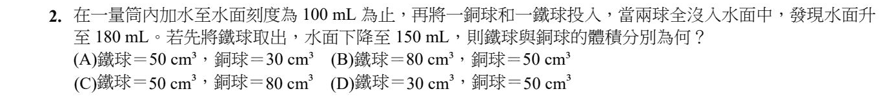
排水法只有一句話：水面上升的體積 ＝ 沉進去的體積。
兩球一起：180 − 100 ＝ 80 cm³。
取出鐵球後水面掉了 180 − 150 ＝ 30 → 鐵球 30 cm³。
銅球 ＝ 80 − 30 ＝ 50 cm³。
注意題目一個字都沒提到密度——它考的純粹是你有沒有看懂那兩次減法各自在減什麼。
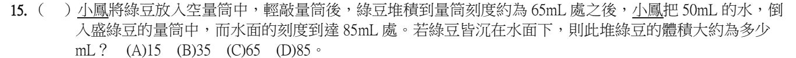
綠豆和綠豆之間有空隙！65 mL 是「綠豆＋空隙」的體積，不是綠豆本身。
倒入 50 mL 水，水會鑽進空隙裡。最後刻度 85 mL ＝ 水 ＋ 綠豆 → 綠豆 ＝ 85 − 50 ＝ 35 mL。
(C) 65 就是把空隙也算進去了。
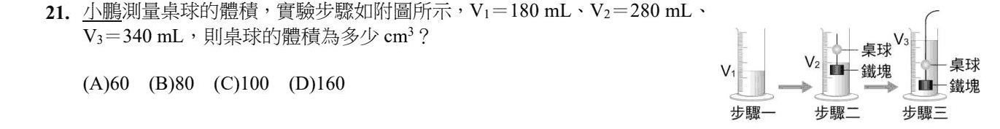
看清楚每一步量筒裡「有誰」：
步驟二 V₂：水 ＋ 鐵塊（桌球還浮在水面上，沒有沉進去）
步驟三 V₃：水 ＋ 鐵塊 ＋ 桌球（被鐵塊拉下去了）
桌球體積 ＝ V₃ − V₂ ＝ 340 − 280 ＝ 60 cm³。
V₁ 這題用不到——它是算鐵塊體積用的（280 − 180 ＝ 100）。題目給的數字不一定都要用。
第 1 章 ③ 質量（上皿天平）8 題
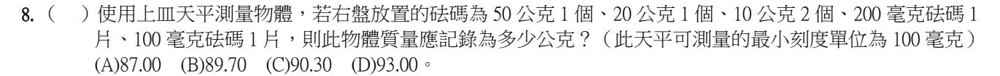
50 ＋ 20 ＋ 10 ＋ 10 ＝ 90 公克；200 ＋ 100 ＝ 300 毫克 ＝ 0.3 公克 → 90.30 公克。
為什麼要寫 90.30 而不是 90.3？最小刻度 100 毫克＝0.1 公克，所以要再往下估一位到 0.01 公克。那個 0 不是多餘的——它是在說「我估過了，估出來是 0」。
測量的數字會說話：位數本身就在告訴別人你用的是什麼工具。
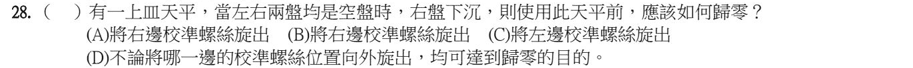
右盤下沉 ＝ 右邊比較重。要讓兩邊平衡，就要讓左邊變「重」一點。
校準螺絲愈往外（離中央愈遠），那一邊的作用愈大 → 把左邊的螺絲往外旋出。
(A)(B) 右邊螺絲旋出，右邊更重，更往下沉。（原卷 (A)(B) 文字一樣，是印刷錯誤，兩個都不對。）(D) 不是隨便哪一邊都可以，方向相反會更歪。
口訣：哪邊重，就把另一邊的螺絲往外轉（或把重的那邊往內轉）。
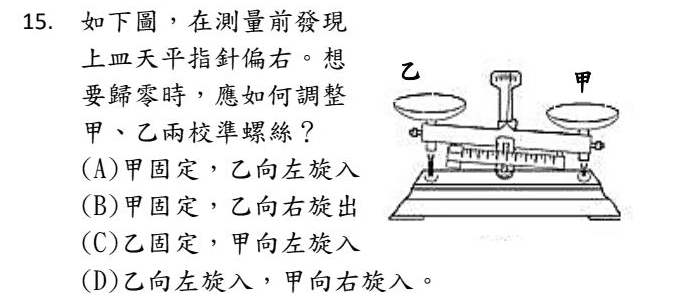
指針偏右 ＝ 右邊比較重。圖中甲在右、乙在左。
讓右邊變輕：把右邊的甲往內（向左、朝中央）旋入，左邊的乙不動 → (C)。
和上一題是同一個原理：重的那邊螺絲往內，或輕的那邊螺絲往外。
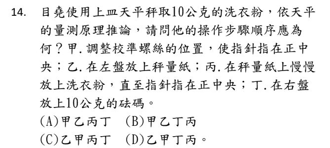
甲（歸零）一定排第一。天平還沒歸零，後面量到的每一個數字都是錯的——這跟實驗設計裡「先把該固定的固定好」是同一個道理。
接著乙（左盤放秤量紙）→ 丁（右盤放 10 公克砝碼）→ 丙（慢慢加洗衣粉到指針回正中央）。
為什麼砝碼要先放？因為你要的是剛好 10 公克。先把目標架好，再慢慢加到平衡；反過來「先倒一堆再來湊」，只會一直加加減減。
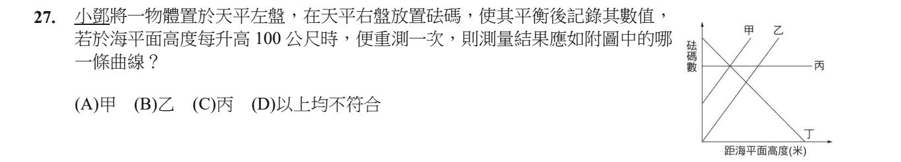
天平是在比較左右兩邊的質量。
海拔變高，物體和砝碼受到的重力一起變小，兩邊還是一樣平衡——需要的砝碼數量不變 → 水平線 丙。
質量不會因為位置改變；會變的是「重量」（用彈簧秤量的那個）。
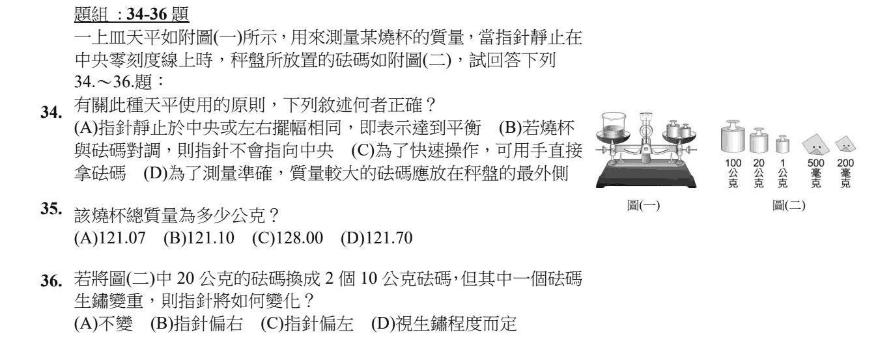
(A) 指針停在中央，或左右擺動的幅度相同，都代表已經平衡 ✓——不用等指針完全停下來。
(B) 上皿天平左右兩臂一樣長，燒杯和砝碼對調後仍然平衡，指針還是指中央。
(C) 要用鑷子夾砝碼。手上的汗會讓砝碼生鏽變重（第 36 題就是在考這個後果）。
(D) 砝碼應放在秤盤中央。
100 ＋ 20 ＋ 1 ＝ 121 公克；500 毫克 ＋ 200 毫克 ＝ 700 毫克 ＝ 0.7 公克。
總質量 ＝ 121.7 → 記成 121.70 公克。
(A) 121.07 是把 700 毫克錯當成 0.07 公克。1 公克 ＝ 1000 毫克，要除以 1000。
生鏽的砝碼比上面標示的更重。換上去之後，右盤實際的質量變大 → 右邊比較重 → 指針偏右。
這就是為什麼不能用手拿砝碼。
第 1 章 ④ 密度25 題
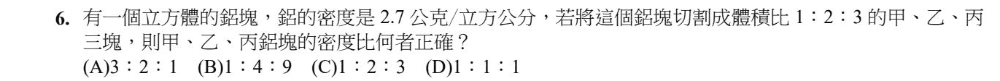
切開之後，每一塊都還是鋁，密度都是 2.7 → 1：1：1。
(C) 1：2：3 是體積比，不是密度比。密度只看「是什麼物質」，不看「有多少」。
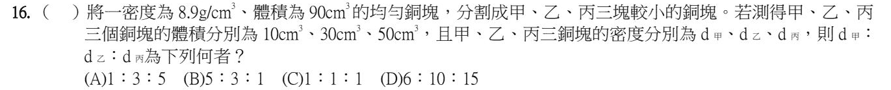
切開來，每一塊還是銅——密度都是 8.9，比是 1：1：1。
質量變了、體積也變了，但兩者的比值沒變。這正是密度好用的地方：它不管你有多少，只管你是什麼。
選 (A) 的人是把體積比直接抄下來——那是「有多少」，不是「是什麼」。
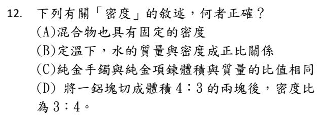
(A) 混合物的成分比例可以不同（糖水可甜可淡），密度不固定。
(B) 同一種物質密度固定，不會隨質量改變。會成正比的是質量和體積。
(C) 手鐲和項鍊都是純金 → 密度相同 → 質量／體積相同 → 反過來體積／質量也相同 ✓
(D) 同一塊鋁切開，密度比是 1：1。
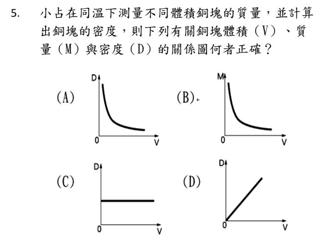
同一種物質、同樣溫度，密度固定——不管銅塊多大，密度都一樣 → D-V 圖是一條水平線。
(A) 密度不會因為體積變大而變小。(B) 質量應該跟體積成正比（通過原點的斜直線），不是曲線。(D) 密度不會隨體積增加。
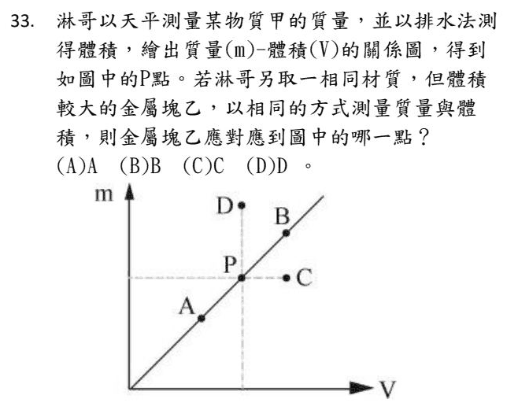
同一種材質 → 密度相同 → 在 m-V 圖上會落在同一條通過原點的直線上。
乙的體積比較大 → 在 P 點的右上方、同一條線上 → B。
A 在線上但體積較小；C 是同質量、體積大（密度變小）；D 是同體積、質量大（密度變大）。
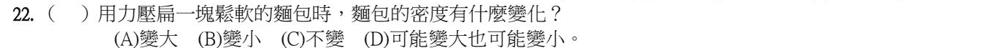
麵包壓扁，質量沒有少（麵包沒被吃掉），但裡面的空氣被擠出去，體積變小。
密度 ＝ 質量 ÷ 體積，分子不變、分母變小 → 密度變大。
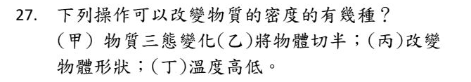
密度 ＝ M ÷ V，看 M 或 V 有沒有「不成比例」地改變：
(甲) 三態變化：質量不變、體積變（水結冰會膨脹）→ 密度改變 ✓
(乙) 切半：質量、體積一起減半 → 密度不變
(丙) 改變形狀：質量、體積都不變 → 密度不變
(丁) 溫度：熱脹冷縮，體積改變 → 密度改變 ✓
共 2 種。
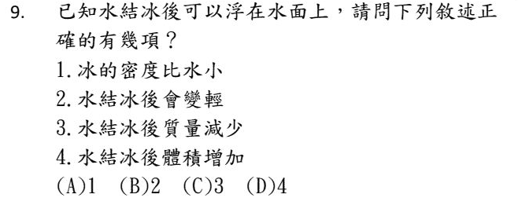
冰可以浮在水面上 → 冰的密度比水小（1 對 ✓）。
水結成冰，質量不變（2「變輕」錯、3「質量減少」錯）。
質量不變、密度變小 → 體積一定變大（4 對 ✓）。
共 2 項。
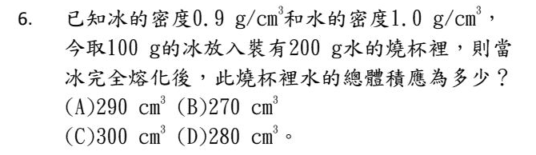
熔化只是換型態，質量不會憑空消失：100 ＋ 200 ＝ 300 g 的水。
水的密度 1.0 → 體積 ＝ 300 cm³。
那 0.9 是幹嘛的？它是誘餌。很多人拿它去算冰塊原本的體積（111 cm³）再加上去，算出一堆不存在的數字。但冰化成水以後就不是冰了——0.9 只在它還是冰的時候有效。
題目給的數字不一定每個都要用。先問一句：這一步我算的是誰的密度？
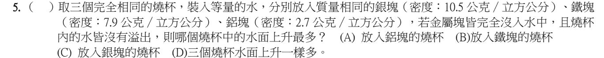
質量相同時，密度愈小，體積愈大（體積 ＝ 質量 ÷ 密度）。
鋁的密度 2.7 最小 → 體積最大 → 排開的水最多 → 水面上升最多。
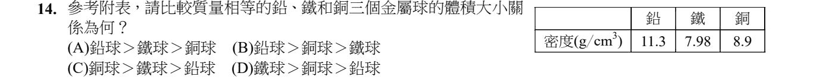
質量相等時，體積和密度成反比：密度愈小，體積愈大。
密度：鐵 7.98 ＜ 銅 8.9 ＜ 鉛 11.3 → 體積：鐵 ＞ 銅 ＞ 鉛。
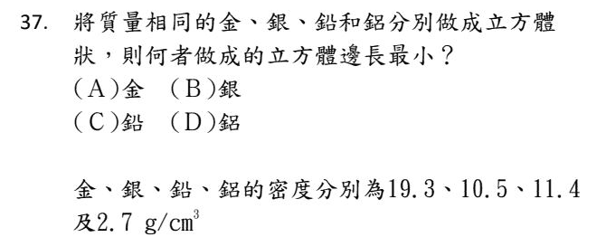
和上一題同一招：質量相同，密度最大的體積最小，做成的立方體邊長也最小。
密度：金 19.3 最大 → 金。
密度 ＝ 質量 ÷ 體積，逐一算：
甲 ＝ 1 ÷ 3 ＝ 1/3，乙 ＝ 2 ÷ 2 ＝ 1，丙 ＝ 3 ÷ 1 ＝ 3
1/3 ： 1 ： 3，全部乘以 3 → 1：3：9。
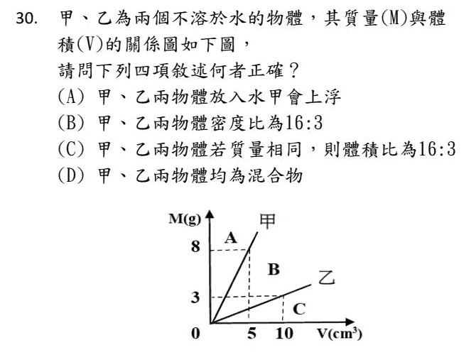
從圖讀數據：甲 5 cm³ → 8 g，密度 ＝ 8 ÷ 5 ＝ 1.6；乙 10 cm³ → 3 g，密度 ＝ 3 ÷ 10 ＝ 0.3。
(B) 1.6：0.3 ＝ 16：3 ✓
(A) 甲 1.6 ＞ 水的 1，會沉；會浮的是乙。
(C) 質量相同時，體積和密度成反比 → 體積比應為 3：16。
(D) 圖上只看得出密度，看不出是不是混合物。
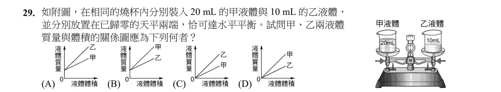
天平平衡 → 甲、乙質量相等。甲 20 mL、乙只有 10 mL → 乙的密度是甲的 2 倍。
M-V 圖上，線愈陡，密度愈大 → 乙的線比較陡。
縱軸是「液體質量」，體積 0 時質量也是 0 → 線要通過原點。(A) 乙比較陡，但沒有通過原點，是錯的；答案是 (C)。
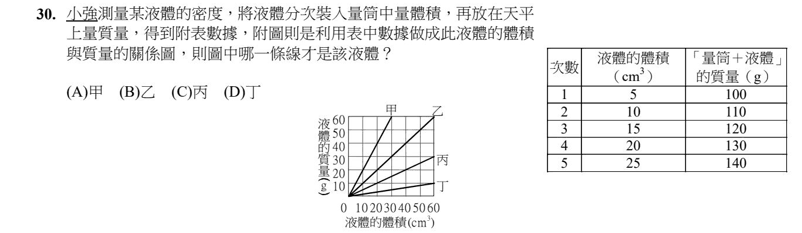
表中的質量是「量筒 ＋ 液體」，但圖畫的是「液體的質量」。
看變化量：體積每多 5 cm³，質量多 10 g → 液體密度 ＝ 10 ÷ 5 ＝ 2 g/cm³。
圖中甲線：30 cm³ 對到 60 g，密度 ＝ 2 → 甲。
（順便算出空量筒 ＝ 100 − 5×2 ＝ 90 g。）
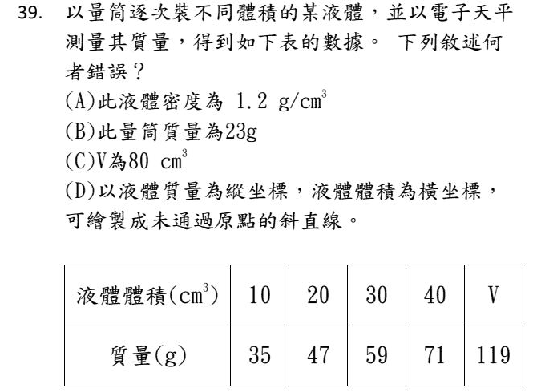
先看穿一件事：表上的質量是「量筒＋液體」，不是液體本身。
每多 10 cm³，質量多 12 g → 密度 1.2 ✓（A 對）
回推空量筒 ＝ 35 − 10×1.2 ＝ 23 g ✓（B 對）
119 ＝ 23 ＋ 1.2V → V ＝ 80 ✓（C 對）
(D) 錯在它把量筒也算進縱軸了。如果縱軸真的是「液體」的質量（已經扣掉量筒），那 0 體積就是 0 公克，直線一定通過原點。會不通過原點的，是「量筒＋液體」那一條。
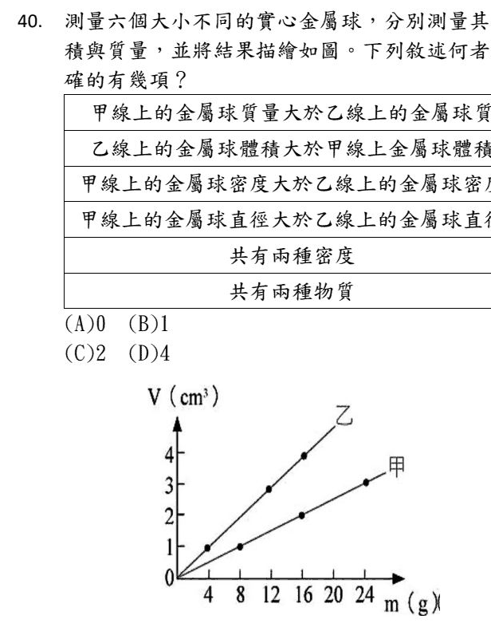
⚠️ 先看軸：這張圖縱軸是 V、橫軸是 m，和平常相反！所以線愈陡，密度反而愈小。
甲：24 g ÷ 3 cm³ ＝ 密度 8；乙：16 g ÷ 4 cm³ ＝ 密度 4。
① ② ④：同一條線上的球有大有小，不能說「甲線上的球一定比乙重／比乙小／直徑比較大」→ 都錯。
③ 甲密度 8 ＞ 乙 4 ✓
⑤ 兩條直線 ＝ 兩種密度 ✓
⑥ 密度只是鑑別物質的參考，光靠密度不能百分之百確定是兩種物質 → 不採計。
正確的有 ③⑤，共 2 項。（選項只有 0／1／2／4，③⑤ 一定對、①②④ 一定錯，所以答案只能是 2。）
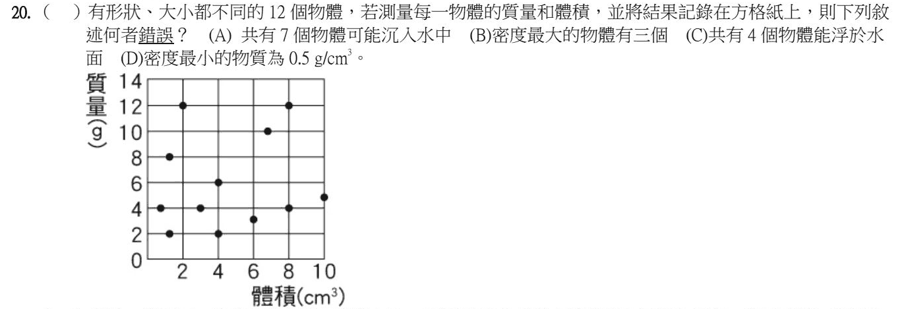
每個點算一次「質量 ÷ 體積」，會發現它們分成幾群：
密度 6：(2, 12)、(4/3, 8)、(2/3, 4) → 3 個，密度最大（B 對）
密度 0.5：(4, 2)、(6, 3)、(8, 4)、(10, 5) → 4 個，比水小，會浮（C 對、D 對）
其餘 5 個密度都大於 1
會沉入水中的 ＝ 12 − 4 ＝ 8 個，(A) 說 7 個 → 錯。
技巧：連原點畫直線，落在同一條直線上的點，密度相同。
1 公斤鐵和 1 公斤棉花，質量一樣（A 對），放上天平會平衡（C 對）。
鐵的密度大 → 同樣質量體積小（B 對）。棉花蓬蓬的一大團，密度比較小 → (D) 錯。
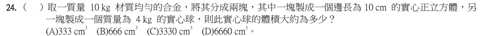
同一塊合金分成兩塊，密度相同——先用正立方體把密度算出來。
正立方體：體積 10×10×10 ＝ 1000 cm³，質量 10 − 4 ＝ 6 kg ＝ 6000 g → 密度 ＝ 6 g/cm³。
實心球：4 kg ＝ 4000 g，體積 ＝ 4000 ÷ 6 ≈ 666 cm³。
注意 kg 要換成 g，不然單位對不起來。
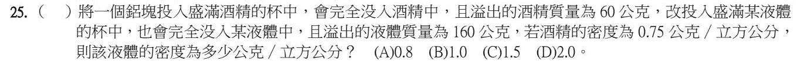
兩次沉下去的是同一個鋁塊，所以兩次排開的體積一樣——這個沒被寫出來的體積，就是整題的橋。
酒精那次：60 ÷ 0.75 ＝ 80 cm³ → 鋁塊體積 80 cm³。
某液體那次：160 ÷ 80 ＝ 2.0 g/cm³。
題目給兩個質量、一個密度，看起來少一個條件。少的那個，通常就是要你自己看出來的那個。
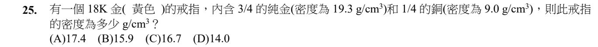
把「3/4 純金、1/4 銅」當成體積的比例：
戒指密度 ＝ 19.3 × 3/4 ＋ 9.0 × 1/4 ＝ 14.475 ＋ 2.25 ＝ 16.725 ≈ 16.7 g/cm³
補充：真正的 18K 金其實是指質量占 3/4。如果照質量算，密度大約是 15.0，選項裡沒有，所以命題老師是把 3/4 當成體積比例。混合物的密度一定會介於兩種成分之間。
木塊會浮，不壓下去就量不到體積——所以綁一顆石頭把它拖下去，這叫綁石法。
總排開 82.0 − 50.0 ＝ 32.0 cm³，扣掉石塊的 18.0 → 木塊 14.0 cm³。
密度 ＝ 8.4 ÷ 14.0 ＝ 0.6 g/cm³。
算完回頭檢查一次：0.6 < 1，所以它確實會浮——答案自己驗證了題目的前提。這個習慣可以救你很多分。
步驟二稱到的 100 g 是「量筒 ＋ 水」，不是水的質量——算密度前要扣掉空量筒的質量。
(A) 量筒可以拿來裝水量體積，沒問題。(B) 歸零要在放東西之前做。(C) 水的密度是 1 g/mL，1.25 明顯不對。
這和 112-30、114-39 是同一個陷阱：秤到的質量裡，有沒有包含容器？